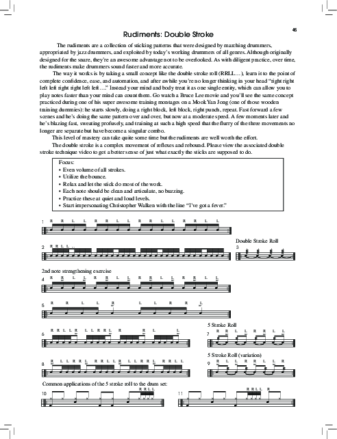
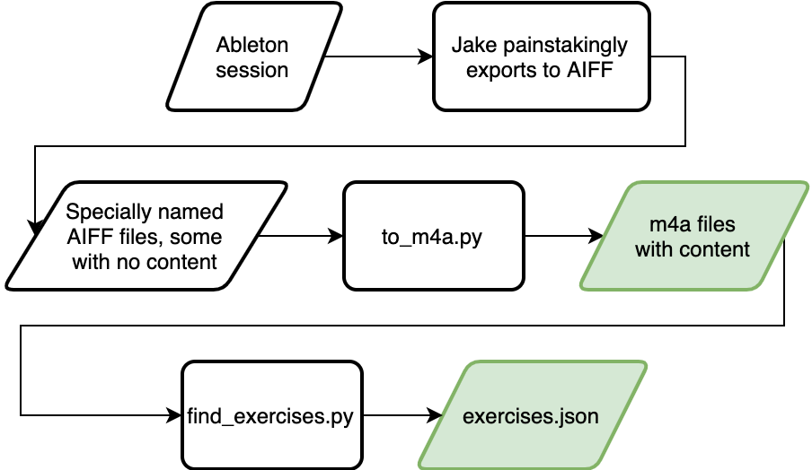
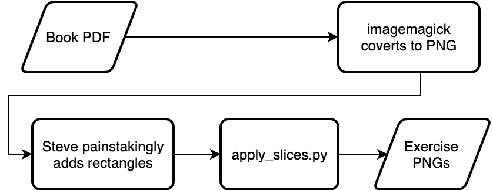
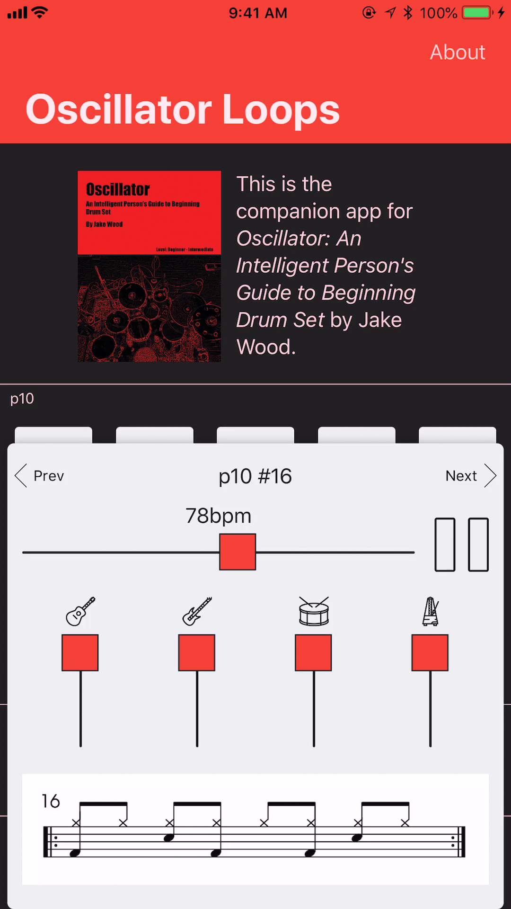

Introducing Oscillator Drum Jams
For the past 2 years, I’ve been slowly working with my drum teacher Jake Wood on an interactive iOS companion to his drum book for beginners: Oscillator. The app is called Oscillator Drum Jams, and it’s out now!

Jake wrote almost 150 music loops tailored to individual exercises in the book. The app lets you view the sheet music for each exercise and play the corresponding loop at a range of tempos.

Instead of practicing all week to a dry metronome, or spending time making loops in a music app like Figure, students can sit down with nothing but their phone and have all the tools they need be productive and engaged.

The app supports all iPhone and iPad models that can run iOS 11, in portrait or landscape mode.
 - 2019-05-05 at 16.01.38.png)
This project ties together a lot of skills, and I’m going to unpack them in a series of posts following this one.
If you enjoy this series, you might also want to check out my procedural guitar pedal generator.
Oscillator Drum Jams: The Asset Pipeline
This is the second post in a series about my new app Oscillator. Start here in Part 1.
You can download Oscillator Drum Jams here: $LINK
To start making this app, I couldn’t just fire up Xcode and get to work. The raw materials were (1) a PDF ebook, and (2) a Dropbox folder full of single-instrument AIFF tracks exported from Jake’s Ableton sessions. Neither of those things could ship in the app as-is; I needed compressed audio tracks, icons for each track, and the single phrase of sheet music for every individual exercise.
Processing the audio
Each music loop has multiple instruments plus a drum reference that follows the sheet music. We wanted to isolate them so people could turn them on and off at will, so each exercise has 3-6 audio files meant to be played simultaneously.
Jake made the loops in Ableton, a live performance and recording tool, and its data isn’t something you can just play back on any computer, much less an iPhone. So Jake had to export all the exercises by hand in Ableton’s interface.
[Waiting on Jake for Ableton export screenshot]
We had to work out a system that would minimize his time spent clicking buttons in Ableton’s export interface, and minimize my time massaging the output for use in the app. Without a workflow that minimizes human typing, it’s too easy to introduce mistakes.
The system we settled on looked like this:
p12/
#7/
GUITAR.aif
BASS.aif
Drum Guide.aif
Metronome.aif
#9/
BASS.aif
Drum Guide.aif
GUITAR.aif
Metronome.aif
p36 50BPM triplet click/
#16/
Metronome.aif
GUITAR.aif
BASS.aif
RHODES.aif
MISC.aif
Drum Guide.aif
The outermost folder contains the page number. Each folder inside a page folder contains audio loops for a single exercise. The page or the exercise folder name may contain a tempo (“50BPM”) and/or a time signature note (“triplet click”, “7/8”). This notation is pretty ad hoc, but we only needed to handle a few cases. We changed the notation a couple of times, so there were a couple more conventions that work the same way with slight differences.
I wrote a simple Python script to walk the directory, read all that messy human-entered data using regular expressions, and output a JSON file with a well-defined schema for the app to read. I wanted to keep the iOS code simple, so all the technical debt related to multiple naming schemes lives in that Python script.
The audio needed another step: conversion to a smaller format. AIFF, FLAC, or WAV files are “lossless,” meaning they contain 100% of the original data, but none of those formats can be made small enough to ship in an app. I’m talking gigabytes instead of megabytes. I needed to convert them to a “lossy” format, one that discards a little bit of fidelity but is much, much smaller.
I first tried converting them to MP3. This got the app down to about 200 MB, but suddenly the beautiful seamless audio tracks had stutters between each loop. When I looked into the problem, I learned that MP3 files often contain extra data at the end because of how the compression algorithm works. MP3 was off the table.
Fortunately, there are many other lossy audio formats supported on iOS, and M4A/MPEG-4 have perfect looping behavior.
Finally, because Jake’s Ableton session sometimes contains unused instruments, I needed to delete files that contained only silence. This saved Jake a lot of time toggling things on and off during the export process. I asked FFmpeg to find all periods of silence in a file, and if a file had exactly one period of silence exactly as long as the track, I could safely delete the file.
Here’s how you find the silences in a file using FFmpeg:
ffmpeg
-i <PATH>
-nostdin
-loglevel 32
-af silencedetect=noise=\(-90.0dB):d=\(0.25)
-f null
-
Here’s how the audio pipeline ended up working once I had worked out all the kinks:
- Loop over all the lossless AIFF audio files in the source folder.
- Figure out if a file is silent. Skip it if it is.
- Convert the AIFF file to M4A and put it in the destination folder under the same path.
- Look at all the file names in the destination folder and output a JSON file listing the details for all pages and exercises.
Creating the images
The exercise images were part of typeset sheet music like this:

There were enough edge cases that I never considered automating the identification of exercises in a page, but I also never considered doing it by hand in an image editor either. No, I am a programmer, and I would rather spend 4 hours writing a program to solve the problem than spending 4 hours solving the problem by hand!
I started by using Imagemagick to convert the PDF into PNGs. Then I wrote an HTML file that could use JavaScript to display each page of sheet music, with a red rectangle following my mouse. The JavaScript code assigned keys 1-9 to different rectangle shapes, so pressing a key would change the size of the rectangle. When I clicked, the rectangle would “stick” and I could add another one. The points were all stored as fractions of the width and height of the page, in case I decided to change the DPI (pixels per inch) of the PNG export. I’m glad I made that choice because I tweaked the DPI two or three times before shipping.
Here’s what that looked like to use:

The positions of all the rectangles on each page were stored in Safari’s local storage as JSON, and when I finished, I simply copy/pasted the value from Safari’s developer tools into a text file.
Now that I had a JSON file containing the positions of every exercise on every page, I could write another Python script using Pillow to crop all the individual exercise images out of each page PNG.
But that wasn’t enough. The trouble with hand-crafted data is you get hand-crafted inconsistencies! Each exercise image had a slightly different amount of whitespace on each side. So I added some code to my image trimming script that would detect how much whitespace was around each exercise image, remove it, and then add back exactly 20 pixels of whitespace on each side.
I still wish I had found a way to remove the number in the upper left corner, but at the end of the day I had to ship.
Diagrams of the asset pipeline


Oscillator Drum Jams: The Audio Player
This is the third post in a series about my new app Oscillator. Start here in Part 1.
You can download Oscillator Drum Jams here: $LINK
With my audio assets in place, I started work on a proof of concept audio player and metronome.
The audio player in Oscillator has three primary requirements:
- It must support multiple audio streams playing exactly in sync.
- It must loop perfectly.
- It must include a metronome that matches the audio streams at any tempo.
Making the audio player work involved solving a bunch of really easy problems and one really hard problem. I’m going to gloss over lots of detail in this post because I get a headache just thinking about it.
AudioKit
The simplest way to write software about music on iOS is AudioKit, a Swift wrapper on top of Core Audio with lots of nice classes and utilities. My computer audio processing skills are above average but pretty weak, and using AudioKit might have saved me time.
I say “might have saved me time” because using AudioKit also cost me time. They changed their public APIs several times in minor version bumps over the two years I worked on this project, and the documentation about the changes was consistently poor. I figured things out eventually by experimenting and reading the source code, but I wonder if I would have had an easier time learning Core Audio myself instead of dealing with a feature-rich framework that loves rapid change and hates documentation.
Time stretching is easy unless you want a metronome
Playing a bunch of audio tracks simultaneously and adjusting their speed is simple. Create a bunch of audio players, set them to loop, and add a time pitch that changes their speed and length without affecting their pitch.
My first attempt for adding a metronome to these tracks was to keep doing more of the same: record the metronome to an audio track with the same length as the music tracks and play them simultaneously.
This syncs up perfectly, but sounds horrible when you play it faster or slower than the tempo it was recorded at. This is because each tick of a metronome is supposed to be a sharp transient. If you shorten the metronome loop track, each metronome tick becomes shorter, and because the algorithm can’t preserve all the information accurately, it gets distorted and harder to hear. If you lengthen the metronome loop track, the peak of the metronome’s attack is stretched out, so the listener can’t hear a distinct “tick” that tells them exactly when the beat occurs.
My first solution to this was to use AudioKit’s built-in AKMetronome class. This almost worked, but because it was synchronized to beats-per-minute rather than the sample length of the music tracks, it would drift over time due to tiny discrepancies in the number of audio ticks between the two.
My second, third, and fourth solutions were increasingly hacky variations on my first solution.
My fifth and successful metronome approach was to use a MIDI sequencer that triggers a callback function on each beat. On the first beat, the music loops are all be triggered simultaneously, and a metronome beat is played. On subsequent beats, just the metronome is played.
Metronome timing is hard
With a metronome that never drifted, I still had an issue: the metronome would consistently play too late when the music was sped up, and too early when the music was slowed down.
The reason is obvious when you look at the waveforms:

The start of each beat in time is always slightly before the beat is heard by the listener, because each instrument’s note has some ramp up (“attack time”) to its peak. So if we stretch the music but have the metronome play exactly on each beat, the metronome doesn’t adjust to the new attack times of the music.
To get around this, I did some hand-wavey math that nudges the metronome forward or backward in time relative to the time pitch adjustment applied to the music tracks.
This approach uses the CPU in real time enough to add risk of timing problems when the system is under load, but in practice it seems to work fine.
These problems would all go away if the loops were all implemented using synthesizers generating data dynamically, because attack times would be consistent across tempos. But that’s a lot of work, and the loops would have sounded very different.
Oscillator Drum Jams: The Interface
This is the fourth post in a series about my new app Oscillator. Start here in Part 1.
You can download Oscillator Drum Jams here: $LINK
This will be a shallower post than the others in this series. I just want to point out a few things.
The original UI was backwards
When I started this project, I thought about it like a programmer: as a view of a collection of data. So naturally, I created a hierarchical interface: pages contain exercises, and exercises have a bunch of stuff in them. I worked really hard on an “exercise card” that would slide up from the bottom of the screen and could be swiped up to show more detail or swiped down to be hidden.
Video URL: https://www.youtube.com/watch?v=KSo9_c2u-9I

After an embarrassing amount of time, I realized I was optimizing for the wrong thing. Really, I was optimizing for nothing. I finally asked myself what people would want to do while using this app. My speculative answers were, in order of frequency:
- Stop and start loops
- Adjust the tempo
- Go to another exercise within the same page
- Go to another page
With that insight, I made some wireframes:


I shed a single tear and spent the next couple of weekends replacing all of my UI code.
Although the iPad wireframe was still a bit silly, we ended up in a pretty good place. It still has Programmer UI Syndrome, but at least the play/pause button is nice and big. At some point I expect to rearrange all the controls on iPad.

 (3rd generation) - 2020-01-03 at 19.35.33.png)
AutoLayout is a pain
I did this whole project using nothing but NSLayoutConstraint for layout, and I regret it. Cartography or FlexLayout would have saved me a lot of time and bugs.